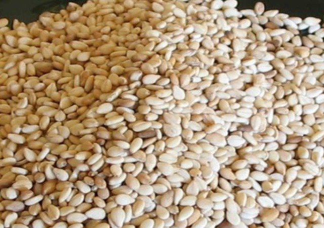

तीळ विषयी माहिती

तीळ
महाराष्ट्रामध्ये खरीप हंगामात या पिकाखाली ५२६०० हेक्टर क्षेत्र होते त्यापासुन १८९०० टन इतके उत्पादन मिळाले व
उत्पादकता ३६० किलो प्रति हेक्टरी होती. रब्बी हंगामात हे पिक २९०० हेक्टर क्षेत्रावर होते व त्यापासुन ८०० टन
उत्पादन मिळाले. तर २८५ किलो/हेक्टर इतकी उत्पादकता होती. तिळ हे पिक ८५-९० दिवसात (कमी कालावधीत) येत असल्याने
दुबार पिक पध्दतीसाठी योग्य आहे.
जमीन
तीळ या पिकास मध्यम ते भारी, पाण्याच्या चांगला निचरा असलेली जमीन निवडावी.
पूर्व मशागत
एक नांगरणी करुन २ ते ३ कुळवाच्या पाळ्या देवून जमीन भुसभुसीत करावी. त्यानंतर मैंद फिरवून जमीन सपाट करावी व दाबून
घ्यावी. यामुळे पेरणी चांगली होवून उगवणसुध्दा चांगली होते.
पांढरा टपोरा दाणा, मध्यम कालावधीत अधिक उत्पादनक्षम, तेलाचे प्रमाण जास्त, हमखास पाऊस पडणा-या खान्देश व लगतच्या
विदर्भ, मराठवाडा विभागातील क्षेत्राकरिता खरीप हंगामासाठी लागवडीस योग्य.
बीजप्रक्रिया
बियाण्यापासून व जमिनीमधून उदभवणारे बुरशीजन्य रोग होवू नये म्हणून पॅरोलॉजी किंवा ट्रायकोडर्मा ४ ग्रॅम प्रति किलो
बियाण्यास चोळावे त्यानंतर २५ ग्रॅम अॅझोटोबॅक्टर प्रति किलो बियाणे या प्रमाणात लावावे.
पेरणीची वेळ
मान्सूनचा पाऊस झाल्यावर आणि योग्य वाफसा आल्यावर जूनच्या दुस-या आठवड्यापासून जुलैच्या पहिल्या आठवड्यापर्यत.
पेरणीचे अंतर
४५ X १० सें.मी किंवा ३० X १५ सें.मी अंतरावर अनुक्रमे ४५ सें.मी. अंतराच्या पाभरीने पेरणी करावी. पाभरीने पेरणी
बियाण्यास बियाणा एवढेच बारीक वाळू अथवा चाळून घेतलेले शेणखत मिसळावे. त्यामुळे बियाण्याचे वितरण प्रमाणशीर होते.
पेरणी २.५ सें.मी पेक्षा जास्त खोलीवर करु नये.
बियाणे
पेरणीसाठी हेक्टरी २.५ ते ३ किलो (एकरी १ किलो) बियाणे वापरावे.
चर काढणे
भारी जमिनीत १२ ओळीनंतर लगेच (बी झाकण्यापूर्वी) दोन ओळीच्यामध्ये (फटीत) बळीराम नांगराचे सहाय्याने चर काढावेत.
यामुळे पडलेल्या पावसाचे पाणी जमिनीत मुरेल. तसेच अतिरिक्त पाणी बाहेर निघून जाण्यास मदत होईल. मुरलेल्या पाण्याचा
पावसाच्या ताणाचे वेळी पिकास फायदा होतो.
विशेष बाब
अधिक उत्पादनासाठी २ टक्के युरीयाची फावारणी पिक फुलो-यात आणि बोंडे वाढीच्या अवस्थेत असतांना करावी.
विरळणी
पेरणीनंतर तीन आठवड्यांच्या आत विरळणी करावी. ३०. सें.मी. अंतराच्या पांभरीने पेरणी केली असल्यास दोन रोपांतील अंतर
१५ सें.मी. किंवा ४५ सें.मी अंतराच्या पांभरीने पेरणी केली असल्यास दोन रोपातील अंतर १० सें.मी राहील अशा बेताने
विरळणी करावी जेणेकरुन रोपांची संख्या हेक्टरी २.२२ लाख राहील.
खते
पूर्व मशागतीच्या वेळी शेवटच्या कुळवाच्या अगोदर प्रति हेक्टरी ५ टन चांगले कुजलेले शेणखत मिसळावे किंवा हेक्टरी एक
टन (एकरी ४ क्विंटल) एरंडी किंवा निंबोळी पेंड पेरणी बरोबर द्यावी. अधिक २५ किलो नत्र प्रति हेक्टर पेरणीच्या वेळी व
२५ किलो नत्र प्रति हेक्टर पेरणीनंतर तीन आठवड्यांनी पेरून द्यावे. सूक्ष्म अन्नद्रव्यांची जमिनीत कमतरता असल्यास
पेरणीच्यावेळी २० किलो गंधक प्रति हेक्टरी द्यावे.
आंतरमशागत
रोपअवस्थेत पीक हळू वाढत असल्याने तणाबरोबर अन्नद्रव्य व ओलाव्यासाठी स्पर्धा करु शकत नसल्याने पेरणीनंतर ३०
दिवसांनी दोन निंदणी व कोळपणी करावी.
पीक सरंक्षण
पाने गुंडाळणारी अळी/पाने खाणारी अळी/तुडतुडे या किडीच्या नियंत्रणासाठी क्विनॉलफॉस २५ टक्के प्रवाही १००० मिली
किंवा फेन्व्हलरेट २० टक्के प्रवाही २५० मिली किंवा ५० टक्के कार्बेरील पावडर २ किलो प्रति ५०० लिटर पाण्यात मिसळून
फवारणी करावी. पानावरील ठिपके (अल्टरनारीया/सरस्कोस्पोरा) व अणूजीव करपा रोगाचा प्रादुर्भाव आढळल्यास मॅन्कोझेब ७५
टक्के १.२५ किलो अधिक स्ट्रेप्टोसायक्लीन ५० ग्रॅम किंवा कॉपर ऑक्सिक्लोरॉईड १.२५ किलो अधिक स्ट्रेप्टोसायक्लीन ५०
ग्रॅम प्रति ५०० लिटर पाण्यात मिसळून फवारणी करावी.
काढणी
साधारणपणे ७५ टक्के पानाचा व खोडाचा रंग पिवळसर होतो तेव्हा पीक काढणीस योग्य झाले असे समजावे. साधारण ८० ते ९५
दिवसात पीक काढणीस येते. काढणी लवकर केल्यास बोंडातील तीळ पोचट व बारीक राहुन उत्पादनात घट येते, काढणी उशिरा
केल्यास बोंडे फुटून तीळ शेतात गळून पडते म्हणून वेळेवर काढणी करावी.
उत्पादन
पावसाचे वितरण चांगले असल्यास साधारणत: हेक्टरी ६ ते ७ क्विंटल जिरायताखाली उत्पादन मिळते.